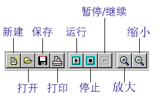

仿真化学实验室的界面和菜单
一.界面
仿真化学实验室的用户界面如下图所示。界面的最上方是主菜单。主菜单的下面是工具栏，工具栏中有一些快捷按钮可以方便您的操作。界面的左边是器件箱，实验室中的烧杯、试管、铁架台、酒精灯等都放在器件箱中。界面中间的空白区域就是实验区了，所有的实验都是在实验区中进行搭建的，实验区就相当于真实实验室中的桌子。

二.菜单
1.文件：新建――用于新建一个实验项目
打开――打开一个已经存在的实验项目
浏览打开――以浏览的方式打开已经存在的实验项目
保存――把当前的实验文件存盘
另存为――把当前的实验文件保存为其它的文件名
保存为图片――把实验区中的景象用图片的格式保存
打印设置――在打印实验区景象前设置打印机的属性
打印――打印实验区中的景象
退出――退出仿真化学实验室
2.编辑：复制――复制选中的实验器件到剪贴板中
剪切――复制选中的实验器件到剪贴板中，并删除这个选中的实验器件
粘贴――把剪贴板中器件放到实验区中
删除――删除选中的器件
属性――查看或编辑选中器件的参数
3.实验控制：运行实验――把实验状态设置为运行状态
停止实验――把实验状态设置为停止状态
暂停/继续――把运行中的实验暂停或把暂停中的实验继续运行
4.程序：变量编辑器――设置和编辑实验中的变量
程序编辑器――编辑脚本程序
5.窗口：工具栏――显示或隐藏工具栏
器件箱――显示或隐藏器件箱
6.工具：药品编辑器――编辑《仿真化学实验室》的药品库
方程式编辑器――编辑《仿真化学实验室》的方程式库
计算器――调用Window中的计算器
7.帮助：帮助――打开软件的随机帮助
关于仿真化学实验室――软件信息
8.网络：访问软件主页――访问公司主页
软件最近更新――访问软件相关页面
写信给项目组――给项目组发电子邮件
三.工具栏
在工具栏上有一些快捷按钮，可以方便您的操作，这些按钮的功能说明如下：

文字注释：点击文字注释按钮，再在实验区中点击一下鼠标，可以在实验区中创建文字标记作为实验的说明。此外文字注释还可以用来动态的显示实验中的数据，具体的应用请阅读应用实例。
曲线工具：点击曲线工具按钮，再在实验区中点击一下鼠标，可以在实验区中创建一个曲线对象，曲线对象可以绘制实验中变量的曲线。具体的应用请阅读应用实例。